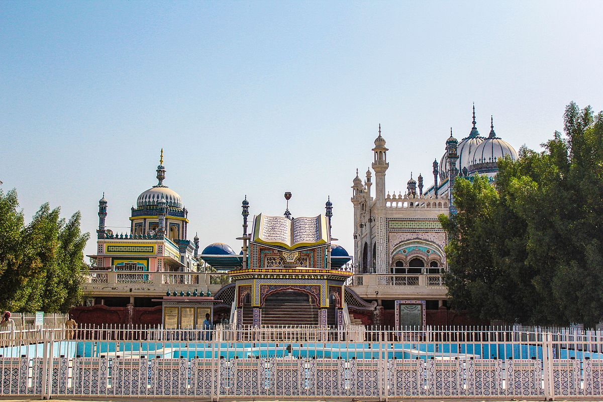

<div class="portfolio-single-load clearfix">
    <div class="custom-full-width-box">
        <div class="custom-container">
            <div class="custom-row align-items-center">
                <div class="custom-image-column">
                    
                </div>
                <div class="custom-text-column">
                    <h2 class="custom-heading">Blue Mosque, Bhong
                    </h2>
                    <p class="custom-paragraph">
                        The Blue Mosque in Bhong, located in southern Punjab, is renowned for its flamboyant architecture. Decorated with intricate designs and vibrant colors, it stands as a testament to Islamic artistry. Despite its remote location, it attracts visitors fascinated by its unique blend of culture and history.

                    </p>
                </div>
            </div>
        </div>
    </div><!-- .custom-full-width-box end -->

</div><!-- end single-project -->
